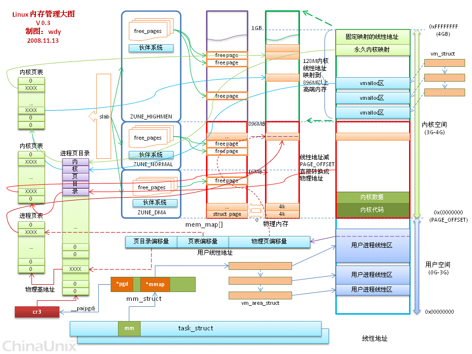

内存管理主要分为：
- 物理内存管理
- 虚拟内存管理
物理内存管理
页
物理内存以页（page frame）为单位，一般为4K，如果是4G的内存那么，将会有一个大小为4G/4K=1M的数组mem_map，每一项保存着每一页的地址。
Zone
Zone是一些连续物理页的合集，参看下面的图3-2。将物理页分成了3个Zone区：
- ZONE_HIGHMEM：物理内存高于896M的区域
- ZONE_NORMAL：常规内存区域，如果DMA可以在此区域做内存访问，也可以使用这块区域
- ZONE_DMA：0~nM，不同的架构和不同的芯片都可能不一样
因为数组mem_map与物理页对应，因此mem_map也被默认分为了上面三个区域。
内存节点
分为两种：
- UMA：只有一个内存节点，CPU访问内存的内存的任何地址的速度是一样的。
- NUMA：多
个处理器，每个处理器都有自己的本地内存，通过总线通讯。访问本地内存比访问其他节点的内存快。
物理页面分配器：伙伴系统
伙伴系统的特征与作用：
- 使用物理页为单位
- 记录哪些是空闲的物理页，那些是内核使用过的物理页
- 可以让系统分配一个或者多个
连续的物理页
kernel启动后会映射物理页面直接映射区，但是ZONE_HIGHMEM区域并没有被映射到内核的虚拟地址上：
gfp_mask
要指定分配哪个ZONE的物理页，以及分配时的行为是由gfp_mask（gfp：Get free page）掩码的不同组合成的flag来决定的。
对于分配到哪个区域的掩码定义有：
#define __GFP_DMA ((__force gfp_t)___GFP_DMA) #define __GFP_HIGHMEM ((__force gfp_t)___GFP_HIGHMEM) #define __GFP_DMA32 ((__force gfp_t)___GFP_DMA32) #define __GFP_MOVABLE ((__force gfp_t)___GFP_MOVABLE) #define GFP_ZONEMASK (__GFP_DMA|__GFP_HIGHMEM|__GFP_DMA32|__GFP_MOVABLE)
如果不指定，默认是分配在ZONE_NORMAL区域。当然以__开头指明这些宏是在头文件内部使用，kernel还定义了以这些为基础的宏，在驱动中应该使用这些进一步包装的宏：
1. __GFP_NORMAL：在ZONE_NORMAL区域分配，如果
另外还有几个常用的mask：
#define GFP_ATOMIC (__GFP_HIGH) #define GFP_KERNEL (__GFP_WAIT | __GFP_IO | __GFP_FS)
- GFP_ATOMIC：没有
__GFP_WAIT表明不允许中断且不需要被调度出去。在中断例程中常用。 - GFP_KERNEL：有可能会被中断和调度出去。驱动中最常用。
页面分配规则和优先级
- 不指定：默认使用
ZONE_HIGHMEM，如果不足那么到ZONE_DMA分配空间。 - __GFP_HIGHMEM：先到
ZONE_HIGHMEM分配空间，若不足，则到ZONE_NORMAL去分配页面，如果还是不够，那么就会到ZONE_DMA中去分配。就是就是从上到下的找空间。 - __GFP_DMA：在
ZONE_DMA中分配页面，如果空间不足，那么失败返回。
核心页面分配函数
- alloc_pages
- __get_free_pages：无法在HIGHMEM分配页面
两个函数最终都是调用alloc_pages_node。
alloc_pages与free_pages
这里有一个使用此函数的例子。加载这个例子的模块有可能会出现问题：
Unknown symbol mem_map
可以查看在/proc/kallsys或者是System.map中是否有这个变量。
这个例子里面也用到了page_address来获得内核虚拟地址(KVA)。
alloc_pages的原型如下：
/* * @gfp_mask [in] 就是上面说的那些掩码组合flag * @order [in] 需要分配空间的2的指数值 */ #define alloc_pages(gfp_mask, order) \ alloc_pages_node(numa_node_id(), gfp_mask, order)
例如：
struct page *pages = alloc_pages(GFP_KERNEL,3); //分配2^3=8个物理页
free_pages用来释放alloc_pages分配的页。
__get_free_pages
这个函数除了gfp_mask无法使用__GFP_HIGHTMEM外，与alloc_pages没有什么差别。
使用__free_pages来释放用此函数分配的页。
get_zeroed_page和__get_dma_pages
一个是分配填充为0的页，一个是在ZONE_DMA分配页。
slab分配器：分配比一个页更小的空间
在字符设备驱动中，经常有：
struct cdev *cdev_a = kmalloc(sizeof(struct cdev),GFP_KERNEL);
这里一个cdev结构体比一个page的大小（4KB）小，使用的是kmalloc来分配。slab就是用来完成小空间分配需要的。
kmem_cache包含多个slab，根据不同的order的放在一个队列上面。而每一个order下又根据使用情况分为三种情况：
- 空闲
- 部分空闲
- 已满
slab中的kmalloc和kzalloc
- slab只能在低端内存区域分配空间，所以即使kmalloc的gfp_mask使用__GFP_HIGHMEM也无法分配到高端内存。
- kzalloc == kmalloc(size,__GFP_ZEROED|flag)
- 获得的是连续的物理内存
虚拟内存管理
vmalloc
获得连续的虚拟内存
ioremap
用来将vmalloc区域的某段虚拟内存区域映射到IO类型的地址。
对于ioremap：
1. 对于外设而言尽可能的使用ioremap_nocache，这样子可以使得这段区域不被cache
2. 因为IO空间在不同的体系架构上有不同的解释，为了屏蔽这些区别可以使用read[b,w]、write[b,w]
3. 使用方法是ioremap_nocache(physical start address,size)
Per-CPU变量
per-CPU变量就是一个变量每个CPU都有一份，这样在访问这些变量的时候就不需要上锁保护以免同时被其他CPU修改，提高了效率。
per-CPU被放到了特定的段内，且每个CPU都有自己的段，访问的时候就访问自己的段内的变量。
extern __percpu __attribute__((setction("data..percpu"))) int xyz
内存管理整体图
在网上看到的一个全局框图（图中的ZUNE应该为ZONE）： 
图片来源于这里
{kind=link}
参考
★1.CSAPP 2nd Edition：极好的书，对应的VM章节也是非常好，极其容易理解，踏实学完这本书对嵌入式开发有很大的帮助。
☆2.Linux内核修炼之道：作者还有一本书比这本书有名《Linux那些事儿之我是USB》。修炼之道在大学的时候就看到了，但是看完确实在工作后的地铁上，这本书可以帮助初学linux内核的人对内核有一个总体的认识，并对linux的一些设计的进化和历史有一定的了解。同时讲述了如何查看一个驱动的代码，这些点点滴滴对于初学者是极好的辅助。推荐。
★3.深入Linux设备驱动程序内核机制：博客前面的图片来源于此书。另外，这本书很不错，刚开始学习Linux设备驱动的同学可以看看，需要注意的是这本书的内核相对于现在的内核算是有点老了，但是瑕不掩瑜。同时可以结合Linux Kernel Development一起学习。
Comments !